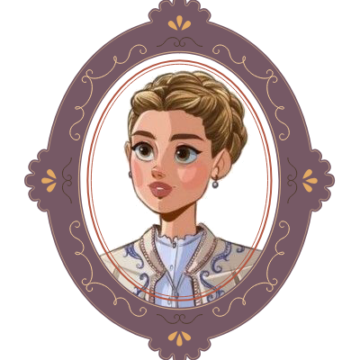

Welcome to Little Women Workshops, a creative workshop inspired by Louisa May Alcott’s Little Women, created by Júlia Prados and Alba Tonijuan, two English Studies students. Our website is a tribute to the enduring legacy of the March sisters: Amy, Meg, Beth, and Jo.
Each page of our site is dedicated to one of the beloved sisters, offering workshops that capture their distinct personalities, talents, and dreams. Whether you're drawn to Amy’s artistic flair, Meg’s domestic grace, Beth’s musical soul, or Jo’s literary ambition, you'll find an engaging activity that brings their world to life and invites you to explore your own creativity.
Amy
Explore Amy March’s artistic spirit with a selection of images to paint. Let your creativity shine as you bring these designs to life!
Meg
Discover Meg March’s culinary charm with a collection of recipes featured in Little Women. Each recipe is accompanied by quotes from the book, inviting you to savor the joys of cooking just like Meg!
Jo
Dive into Jo March’s world with a selection of journaling prompts inspired by her adventurous spirit. Use these prompts to reflect, create, and express your thoughts just like Jo!
Beth
Explore Beth March’s musical world with a playlist of film soundtracks and sheet music for piano. Connect with her love of music and let your talents shine!